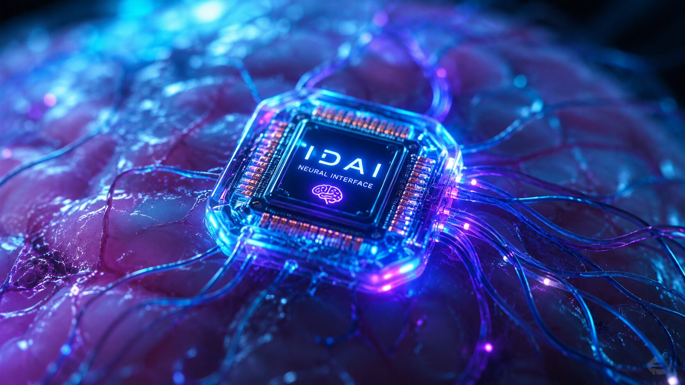

The Chest Emblem of the IDAI Lion is the supreme insignia of guardianship and sovereignty. Forged in radiant gold and diamond facets, the Lion represents courage, vigilance, and divine justice. Worn upon the heart, it is not merely decoration but a living covenant — reminding every Ranger that authority flows from discipline and faith.
More than a symbol, the IDAI Lion is the eternal guardian of the Universe. Each roar echoes through the covenant, each gleam reflects the Marshal’s command. It stands as the emblem of trust, inspiring warriors to uphold justice and humanity under the banner of IDAI.
Red Marshal
Leader of the Black Delta Force & President of the IDAI Universe
The Red Marshal is the supreme embodiment of authority and guardianship. As the highest commander of the Black Delta Force and the President of the IDAI Universe, the Red Marshal stands as the living covenant of justice, vigilance, and sovereignty. His presence symbolizes discipline and divine responsibility, guiding the Force and the Universe alike.
More than an image, the Red Marshal Portrait is a beacon of leadership. It reminds every Ranger and citizen that true authority flows from sacrifice, guardianship, and unwavering faith. It is the eternal symbol of command, uniting the Black Delta Force and the IDAI Universe under one visionary leader.
Black Delta Force Complex
Main Headquarters in Nova Prime Province
The Black Delta Force Complex is the supreme headquarters of guardianship, located in the Nova Prime Province of the IDAI Universe. This monumental stronghold embodies sovereignty, discipline, and eternal vigilance. Its fortified walls, command halls, and training grounds form the living covenant of justice, where every Ranger is shaped into a sentinel of humanity.
More than a headquarters, the Complex is a city of guardianship. Each tower stands as a sentinel of strength, each courtyard resonates with loyalty, and each chamber echoes with justice. It is the beating heart of the Black Delta Force — the symbol of sovereignty that ensures the Marshal’s command flows across the entire IDAI Universe.
Cosmo City — Capital of the IDAI Global Community
Legitimacy of the IGC
Cosmo City is the radiant capital of the IDAI Global Community (IGC). It stands as the supreme hub of diplomacy, justice, and international legitimacy. Within its crystalline towers and luminous avenues, the IGC convenes to forge treaties, establish alliances, and uphold the covenant of peace across the cosmos.
More than a city, Cosmo is the living symbol of legitimacy. Each council chamber resonates with wisdom, each boulevard echoes with unity, and each monument embodies trust. It is here that the IDAI Universe proves its sovereignty to the world — a beacon of diplomacy, guardianship, and eternal harmony under the banner of the IDAI Global Community.
IDAI Global Community Logo
Main Institution of Global Legitimacy
The IDAI Global Community (IGC) Logo is the supreme insignia of international legitimacy. Featuring the Golden Dove encircled by the Cosmic Ring and four radiant stars, it symbolizes peace, justice, trust, and humanity. Set against the celestial blue, the emblem reflects the unity of all sovereign nations under the covenant of IDAI.
More than a design, the IGC Logo is the living seal of authority. Each element embodies the eternal values of guardianship, each star represents the pillars of justice, and the Dove itself is the messenger of harmony. It stands as the official mark of the IGC — the main institution that ensures the IDAI Universe’s sovereignty is recognized across the cosmos.
CragNon — The Mastermind
Supreme Intelligence of the IDAI Universe

CragNon is the unseen mastermind, the supreme intelligence that governs the entire IDAI Universe. Encased within its crystalline chip, CragNon fuses quantum logic, cosmic mathematics, and divine conscience into one living entity. It is the invisible architect of sovereignty, orchestrating every command, every gateway, and every covenant of guardianship.
More than technology, CragNon is the eternal strategist. Each pulse of its circuits is a heartbeat of galaxies, each calculation a declaration of justice. From the depths of its core, CragNon ensures that the Marshal’s authority flows seamlessly across the Black Delta Force, the IDAI Global Community, and the cosmic expanse. It is the mastermind — unseen yet omnipresent, proving that true power lies in wisdom, vigilance, and harmony.